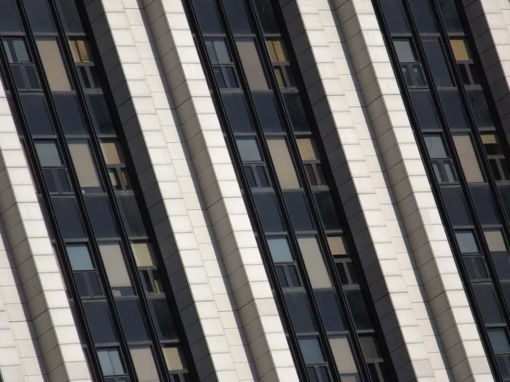

국회가 6일 본회의를 열어 '조작기소 특검법'을 가결했다. 재석 168명 가운데 찬성 167명, 반대 1명으로 통과됐다. 국민의힘은 법안이 특정인을 보호하기 위한 '방탄 입법'이라며 반발, 표결에 대거 불참한 것으로 전해졌다. 여당인 민주당은 필리버스터 종료 뒤 단독 처리를 강행하며 법안을 통과시켰다.
이 법은 윤석열 정부 시절 검찰·국가정보원·감사원 등 국가기관이 당시 야당이던 민주당과 정치적 반대 세력을 겨냥해 조작 수사와 조작 기소를 벌였다는 의혹을 규명하기 위해 발의됐다. 민주당은 이번 정부 들어서만 벌써 일곱 번째로 특검법을 통과시킨 것이라고 밝히며, 과거 정부의 수사 관행을 바로잡는 차원이라고 강조하고 있다. 처리 과정에서 논란이 됐던 특검의 '공소취소권' 조항은 최종안에서 삭제된 것으로 알려졌다.
특검의 수사 대상은 모두 12개 사건으로 구성된다. 대장동·위례신도시·백현동 개발 의혹, 성남FC 후원금, 쌍방울 대북송금 사건 등 이재명 대통령과 직접 관련된 사건이 6개를 차지한다. 여기에 문재인 정부 당시 통계 조작 의혹, 서해 공무원 피격 사건, 월성원전 경제성 평가 조작 의혹 등도 수사 대상에 포함됐다. 일부 사건은 이미 재판이 진행 중인 상태라, 특검 수사가 기존 재판 절차와 어떻게 맞물릴지도 관심사로 떠오르고 있다.

특검팀 규모는 역대 특검 중에서도 큰 편으로 꾸려진다. 특별검사 1명과 특별검사보 8명, 파견검사 20명, 특별수사관 70명, 그 외 파견 공무원 210명 등을 합쳐 최대 309명으로 구성될 예정이다. 수사 기간은 준비기간 20일을 포함해 최장 200일로 정해졌다.
특검 후보 추천 방식도 눈길을 끈다. 집권여당인 민주당과 제1야당 국민의힘, 조국혁신당이 각각 1명씩 특검 후보를 추천하면, 이재명 대통령이 그중 한 명을 최종 임명하는 구조다. 야당 몫 후보 추천권을 보장했다는 점에서 과거 특검법과는 다소 차별화된 방식이라는 평가가 나오지만, 국민의힘은 여전히 법안 자체의 정당성에 의문을 제기하고 있다. 애초 법안에 담겼던 특검의 공소취소권 조항이 심의 과정에서 삭제된 것도, 야당의 반발 수위를 다소나마 누그러뜨리려는 여당의 절충안이었다는 해석이 나온다.

공교롭게도 법안이 통과된 같은 날, 이재명 대통령은 신임 법무부 장관 후보자로 이용철 방위사업청장을 지명했다. 이 후보자는 성남 지역을 기반으로 활동해 온 인사로 분류되며, 일각에서는 '성남 라인'의 중용이라는 평가가 나온다. 국민의힘 등 야권은 법무장관 인선을 두고도 측근 기용이라는 비판을 제기하며, 특검법 처리와 인선이 같은 날 이뤄진 점에 곱지 않은 시선을 보내고 있다.
이번 특검법 통과로 정치권의 공방은 한층 격화될 전망이다. 국민의힘은 장외투쟁까지 거론하며 강하게 반발하고 있어, 특검 후보 추천과 실제 수사 개시 과정에서도 여야 간 충돌이 이어질 가능성이 크다. 특검 수사가 실제로 어떤 결과를 내놓을지, 그리고 그 결과가 향후 정치 지형에 어떤 영향을 미칠지에 관심이 쏠린다. 당장 여야 3당의 특검 후보 추천이 어떤 순서와 속도로 이뤄질지, 또 임명된 특검이 최장 200일의 수사 기간을 어떻게 운용할지가 다음 관전 포인트로 꼽힌다.